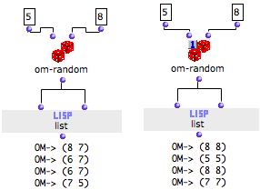

OpenMusic DocumentationHiérarchie de section : OM 6.6 User Manual > Visual Programming II > Evaluation Modes > Evaluate-Once Mode
OpenMusic DocumentationHiérarchie de section : OM 6.6 User Manual > Visual Programming II > Evaluation Modes > Evaluate-Once Mode
Navigation : page précédente | page suivante
Attention, votre navigateur ne supporte pas le javascript ou celui-ci à été désactivé. Certaines fonctionnalités de ce guide sont restreintes.
Evaluate-Once Mode
Properties
Use
[1]A box on "evaluate-once" mode is locked at each user-evaluation[2] after the first internal evaluation. It remains locked for all subsequent internal-evaluations[1]. When the next user-evaluation takes place, the box is evaluated again.
A box on "eval-once" mode is evaluated once, and only once. This is valid :
if this box has multiple outputs,
if this box is connected to several upstream boxes,
for all upstream connected boxes.
Multiple Internal Evaluations
A box connected to several downstream boxes can be evaluated several times at a single evaluation : in this case, reproducing the evaluation of a box can be either useless and lengthy. It can also be or a source of miscalculation, when a box is likely to return different results , while it must return the same values to all connected boxes.
A box set on "evaluate-once" mode returns the same values to all the boxes it is connected to at a single evaluation.
Procedure
To set a box on "once" mode, press b and click on the upper left cross once. A small icon appears.
Example

|
In the example below, the output of om-random is connected to the two inputs of list. In both cases, om-random returns a different value every time is is called. But :
|
Références :
Internal Evaluation
Evaluation of a box by OM, triggered by a user evaluation, or by the internal evaluation of an upstream box connected to it.
User Evaluation
A user evaluation triggers one or more internal evaluation of the box and of possible upstream boxes connected to it.
Plan :
Navigation : page précédente | page suivante
A propos...(c) Ircam - Centre Pompidou